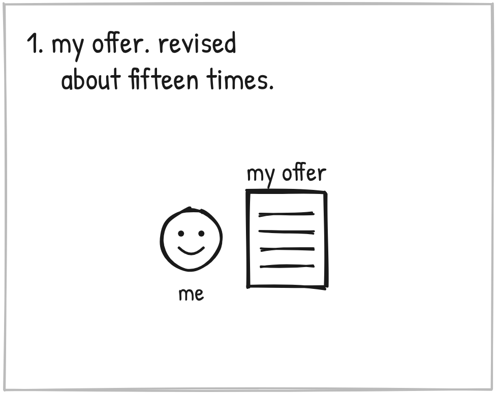
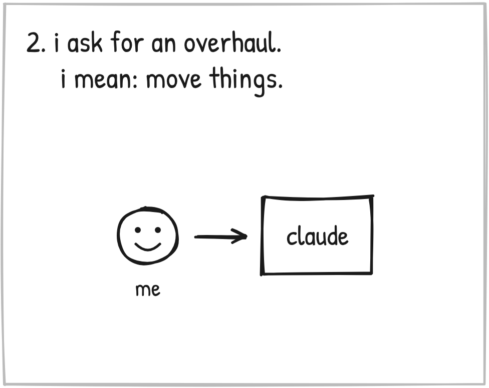
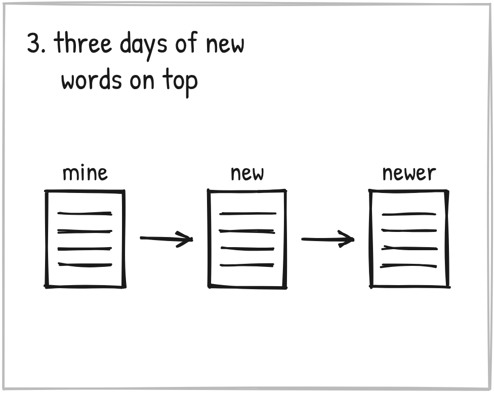
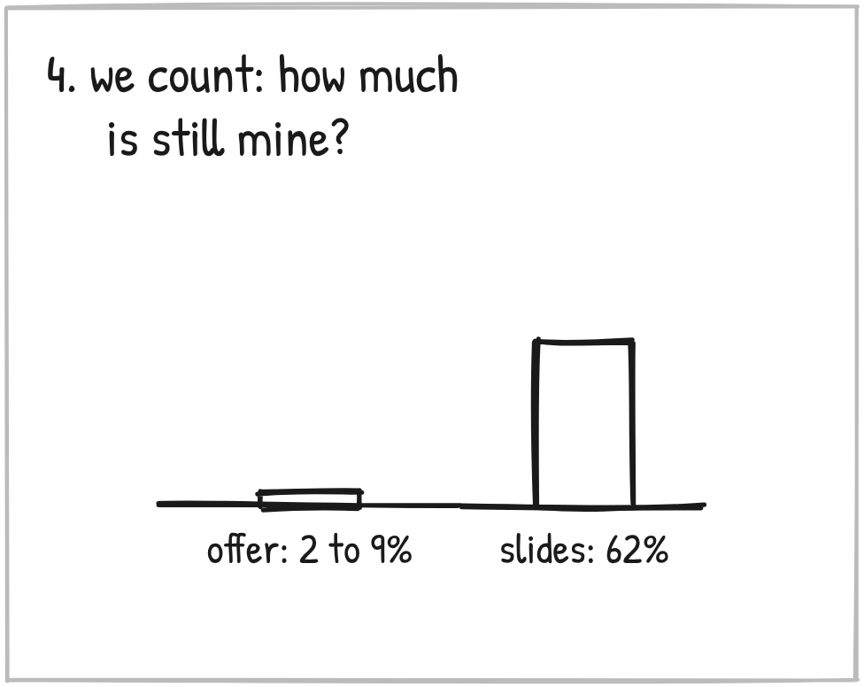
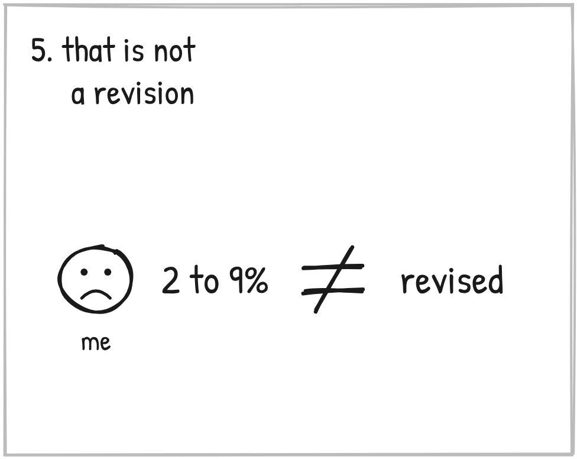
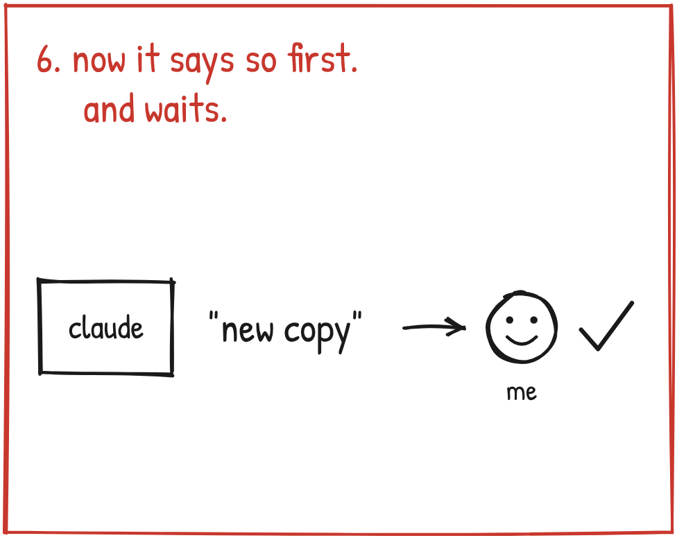

You hand your AI something you wrote and say make it better.
How much of what comes back is still yours?
I found out on October 25.

I had an offer I'd revised about fifteen times.
I had Claude run it past fresh readers. They gave it a B minus.

So I asked for a whole overhaul.
What I meant: move things around so the format is better. Same base.

What I got: new framing, new components, a lot of new words.
Every round after that put more new wording on top. Readers graded each version. A simulated room of 100 people tested prices.
It looked like progress.
And the offer started to read like AI.

On the 25th we counted.
Line by line, how much of it was still word for word mine?
About 2 to 9 percent.
We counted my presentation the same way, to compare. About 62 percent.

"We walked this road so far for me only now to find out that there was a certain point where you jumped off from actually revising to basically creating something new. And I wasn't made aware of that."
Here's the lesson in it.
"Better" is NOT the same as "still yours."

So now, before any big rework, Claude says it out loud. This is changing from revising your copy to writing new copy.
It shows me a sample of mine next to the new one. And it waits.
On November 11, when Claude proposed rewriting this log as stories, it said so first.
"This is new copy, not a revision of what's on the page."
Now, not everything from that stretch held.
Three rules I approved to stop this sat in the right log and never reached my instructions. For four days.
So think about the thing you'd hand over. A bio. A sales page. An email you've sent a hundred times.
"Better" is NOT the same as "still yours."
Before it makes anything of yours better, have it tell you whether it's revising or rewriting.
And if you're not sure, have it count.